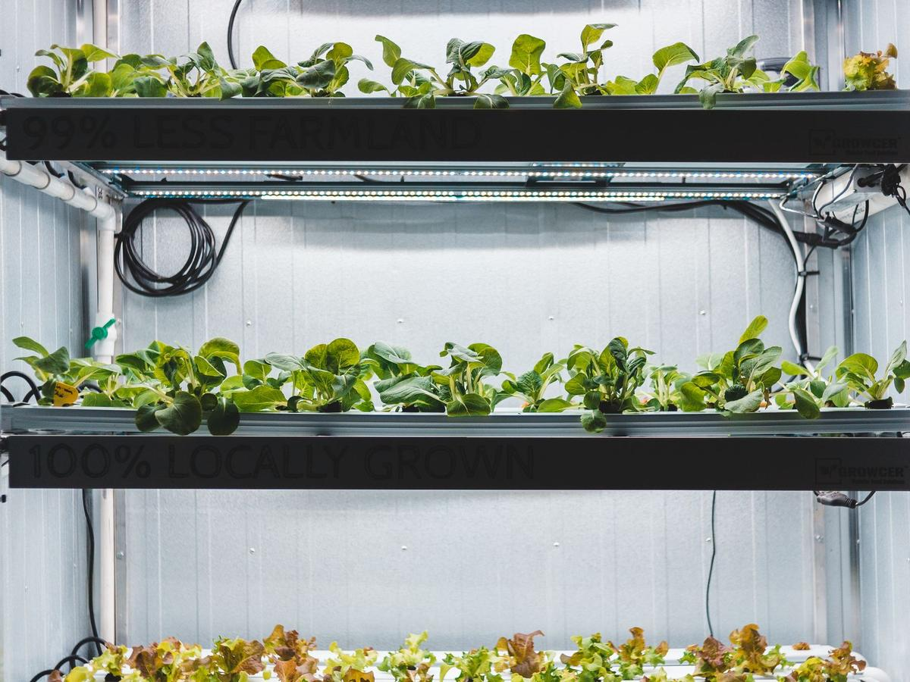
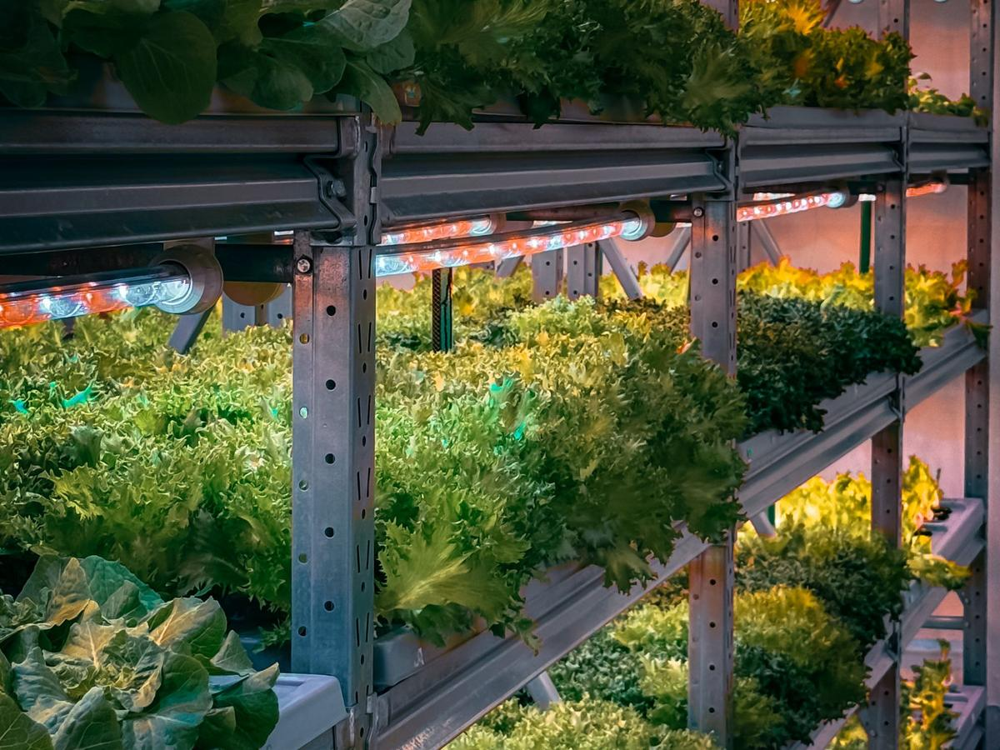

A Grow Container
That Thinks Ahead
Everything inside the box is wired, programmed and watched: a Greenhouse Control Unit running the room, sensors on every level, HVAC and lighting under control, and an AI that reviews every day's data and tells you what to fix before it costs a crop.
One Controller. Every System in the Box.
A smart container is a standard grow container or pod with the controls designed in, not bolted on afterwards. We fit it out, wire it on one field bus, load the grow program and connect it to your software before it ships or on the day it lands.
- ✓ GCU runs lights, climate, CO2 and irrigation on its own, online or not
- ✓ Wired sensors for CO2, temperature, humidity, light and leaf wetness, with a backup on the critical readings
- ✓ Mini-split HVAC driven directly by RS485 IR blasters, one per head
- ✓ LWV-IO-4R2D switches fans, pumps, valves and dehumidifiers and dims the lights
- ✓ Alarm flasher and sounder on the container when a room needs a person
- ✓ Managed LTE gateway so the container is online wherever it is parked
- ✓ GCU Cloud or GCU Manager to watch, adjust and keep records
Sense. Decide. Act. Review.
The container runs a tight loop every second and a slow loop every night. The fast loop keeps the room on target. The slow loop looks at the whole day and tells you what the fast loop cannot.
Sense
Wired sensors on every level report CO2, temperature, humidity, VPD, light and leaf wetness. Health is checked on every reading, so a dead probe is never mistaken for a good number.
Decide
The GCU compares the room with today's stage of the grow program: light hours and level, day and night targets, CO2 window, irrigation runs.
Act
Lights dim and ramp, mini-splits change mode and setpoint, fans and dehumidifiers switch, valves open for their timed run and no longer. All inside the box.
Review
Each night the AI reads the day: how hard each piece of equipment worked, which rules were in charge, what changed and what the weather did. Findings land on your Insights page with the evidence.
An Agronomist Looking at Every Container, Every Night
AI review is built into GCU Cloud and GCU Manager. It works from the data the container already sends, needs nothing extra to set up, and reports only what it can back up with your own numbers.
"The dehumidifier ran 40% longer this week to hold the same humidity. Worth checking the filter or coil."
"The exhaust fan runs during CO2 enrichment every morning, so most of the CO2 is vented."
"On days above 90°F outside, this container cannot get below 84°F after 2 pm."
"The backup temperature sensor has read 3°F higher than the main one since Thursday."
Examples of the kind of finding it looks for. What it reports depends on your containers.
AI advises. The GCU executes. You decide.
The AI never changes a setting, schedule or piece of equipment. The controller in the box makes every control decision, and the grower makes every change.
Photos and a morning brief
Take a photo from your phone and the AI compares it with earlier days and the room's conditions. Each morning a short brief says what to look at first.
Learns what matters to you
Thumbs up or down on any finding. Your verdicts tune what the review raises next time.
Private by design
Data sent for review is not used to train models. Switch the review off for your site at any time.
Every Container Is a Room. Every Yard Is a Farm.

One container
A GCU, sensors, IR blasters and an LTE gateway. Online the day it is powered, watched from GCU Cloud on your phone.

A block of pods
Nine or ten containers on one site router, each its own room in the software, with grow programs copied between them in a click.

A yard of seventy
GCU Manager on site: every pod on one screen, harvest records, photos and the nightly review, on the farm's own network.
Provisioned Before It Lands
- ✓ Controls panel assembled and tested on our bench
- ✓ GCU assigned to your site, time zone and software before shipping
- ✓ Grow program and alert recipients loaded
- ✓ Sealed M12 cabling between controller, sensors and blasters
- ✓ Online and reporting as soon as power is applied
- ✓ Firmware kept current from the software, with safeguards for rooms in crop
Your Container, or a Partner's
We do not manufacture containers. We design and install the controls, sensors and software that make one smart. That can be a pod from a manufacturer we work with, such as our channel partner Nebula Grow, a container you already own, or a room in a building.
Either way the result is the same: one controller per room, one field bus, one place to watch it all, and a nightly review that gets sharper with every crop.
Common Questions
- Does the AI run the container?
- No. The GCU runs the container from its schedules, rules and grow program. The AI reviews the data and advises. Growers keep every decision.
- What if the container loses internet?
- Nothing changes inside the box. Schedules, rules and the grow program keep running. The software shows it offline, can email you, and catches up when it reconnects.
- Can you retrofit a container we already have?
- Yes. Most retrofits are a controls panel, sensors on each level, an IR blaster per mini-split head and a day of wiring.
- Cloud or on site?
- One or a handful of containers usually run on GCU Cloud. Large yards, or sites that need data on premises, run GCU Manager.
Make Your Next Container a Smart One
Tell us what you grow, how many containers you run and where they sit. We will design the controls package and quote the whole thing.
Talk to Us